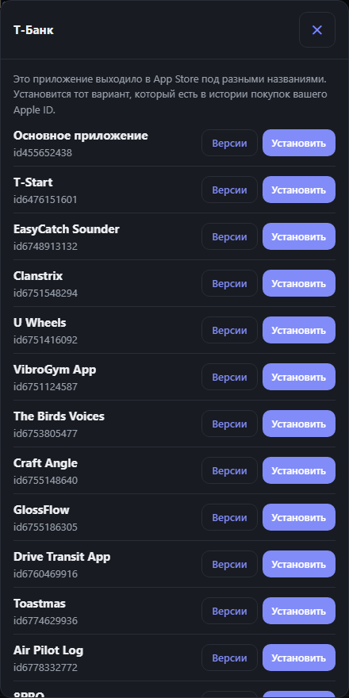
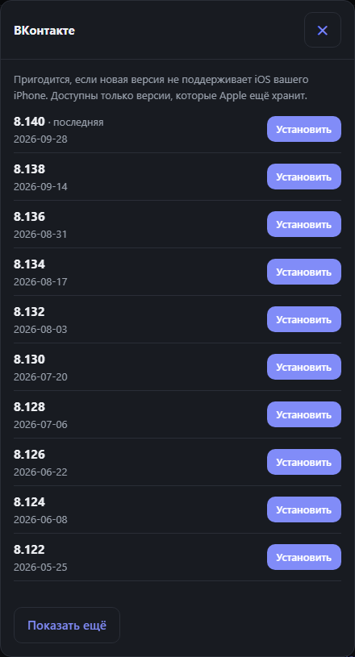
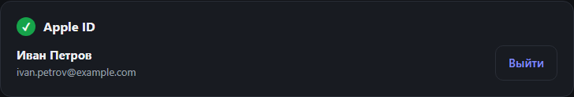
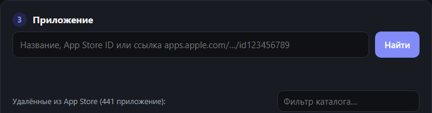

Блог
Удалённые приложения — и как их вернуть
Разбираем, как восстановить приложения из истории покупок Apple ID и что делать, если что-то не получается.
Как вернуть удалённые из App Store приложения на iPhone
Пошаговая инструкция: вход в Apple ID, подключение iPhone, выбор приложения и установка по USB.
Читать →
Как обновлять «Возврат» и установленные приложения
Удалённые из App Store приложения сами не обновляются. Показываем, как обновить их одной кнопкой — и как обновляется сама программа.
Читать →
«Этого приложения нет в истории покупок»: что делать
Почему программа не находит приложение в вашем Apple ID и как это обойти.
Читать →
Как поставить старую версию приложения, если не хватает iOS
Сообщение «Нужна iOS … или новее» значит, что последняя версия вам не подходит. Выбираем более старую.
Читать →
Как устроен «Возврат»: ipatool, pymobiledevice3 и локальный сервер
Что происходит между нажатием «Установить» и иконкой на экране iPhone.
Читать →
Безопасно ли вводить пароль Apple ID в «Возврате»
Куда уходит пароль, как защищён локальный сервер и что делать, если вы пользовались другими ipatool-программами.
Читать →
Первый запуск на Windows, macOS и Linux
Драйверы, предупреждения SmartScreen и Gatekeeper, команды для Linux.
Читать →Почему не приходят push-уведомления у восстановленных приложений
Приложение работает, а пуши нет. Это ограничение Apple, а не программы.
Читать →
Частые ошибки и как их исправить
iPhone не найден, драйвер Apple, поиск не находит приложение и другие сообщения.
Читать →В этой рубрике пока нет статей.